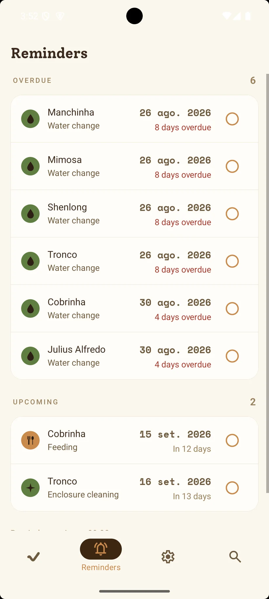

It tells you what is due.
One notification, at a time you pick, listing the day's chores across the whole collection. Feed Basil, change water for six of them, clean out Ziggy. If you would rather be told animal by animal, that works too.
